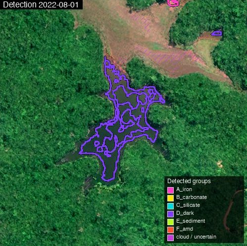
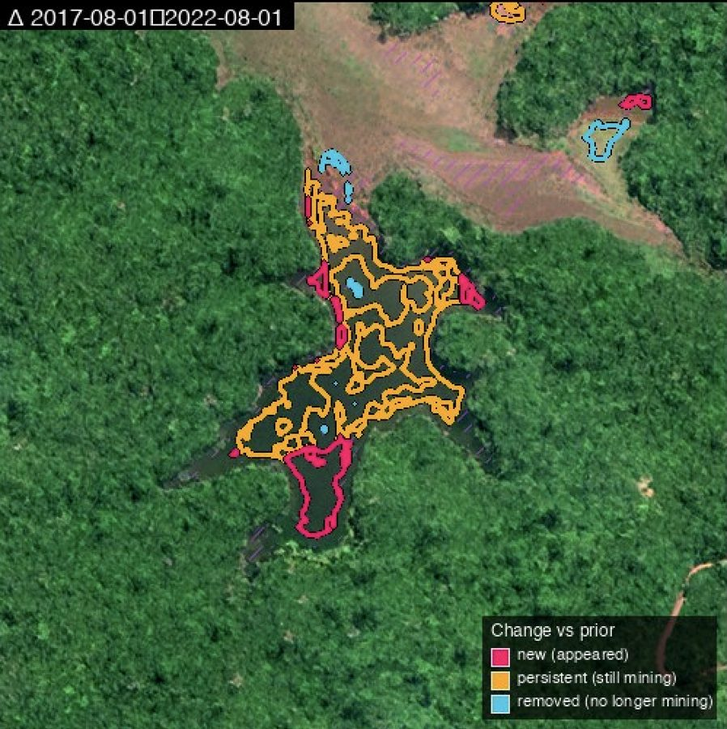
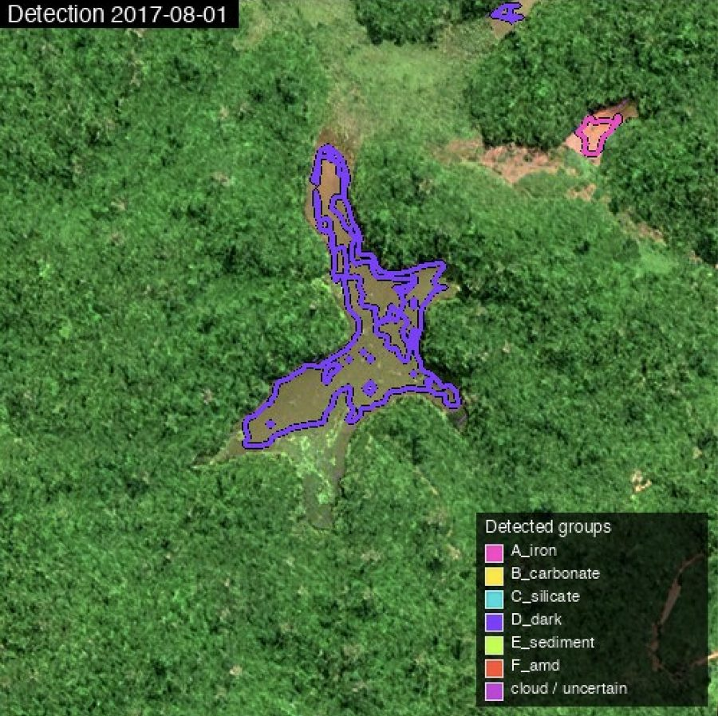

Frequent, site-resolved, type-aware mine detection anywhere on Earth — 2–4 m MS + 1 m visual, weekly to monthly, classifying each detection by mineral type.
Mining is one of the largest and least transparent sectors. Governments must monitor legal operations for compliance, find illegal mining, formalise artisanal mining, and track environmental impact — none of which works without frequent, site-resolved, type-aware detection. Free data does not cover this: the best free alternative is Amazon-only, quarterly and 480 m (one pixel = 23 ha). SkySpera is the only globally-available service at usable resolution and cadence — 2–4 m multispectral plus 1 m visual, weekly to monthly worldwide — classifying each detection into six spectral groups. Independently validated at 100% of sites found and 97% type-matched against the Tang & Werner 2023 global reference across 12 AOIs on five continents. It identifies new, retired and persistent mining between any two dates.




Tell us the ground you need to watch — we'll show you what SkySpera can do with it.
Talk to us